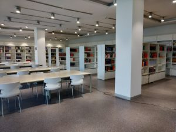
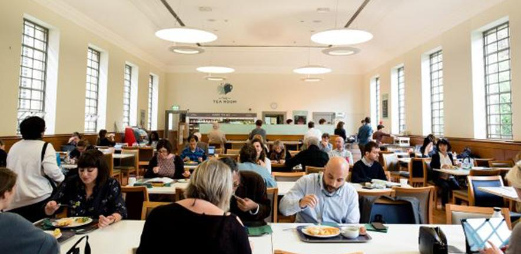

Our Facilities
The college has a well designed administrative block and various other rooms and facilities

World Class Library
The library is almost in the centre of the campus.
And thus it is accessible from any parts of the campus.
It is mostly responsible for gathering knowledge.

Largest Playground
This is the largest playground in the campus where
all the equipmment
is provided for all type of games. Students are allowed to play in their
free time.

Tasty and Healthy Food
sCafetria is the place where students and staff can hangout with the refreshments available.Cafetria provides a large variety of food items.